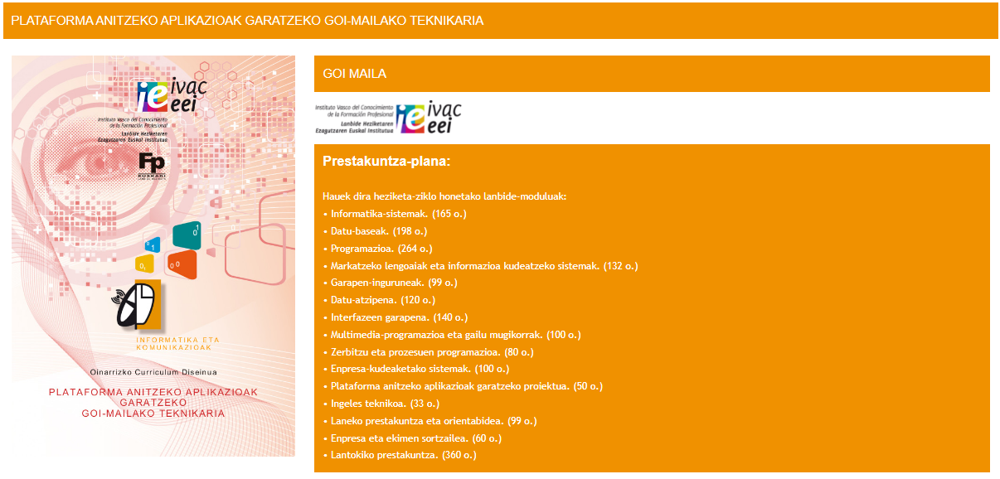

Zer-nolako lan-irtenbideak izango ditut?
- Informatika-sistemak konfiguratzea eta ustiatzea, eta, horretarako, sistemaren konfigurazio logikoa
doitzea, ezarritako irizpideen eta erabilera-beharren arabera.
- Datu-baseak kudeatzea, eta, horretarako, horien diseinu logikoa interpretatzea eta datuen osotasuna,
konsistentzia, segurtasuna eta eskuragarritasuna egiaztatzea.
- Datu-baseetarako sarbidea duten plataforma anitzeko aplikazioak garatzea, zehaztapenetara egokitzen
diren lengoaiak, tresnak eta liburutegiak erabilita.
- Usagarritasun egokia duten erabiltzaile-interfaze grafiko elkarreragileak garatzea, eta, horretarako,
ikus-osagai estandarrak erabiltzea edo berariazko ikus-osagaiak inplementatzea.
- Prozesu anitzeko eta hari anitzeko aplikazioak garatzea, berariazko programazioko teknikak eta
liburutegiak erabilita.
- ERP-CRM sistemen ezarpenean parte hartzea, horren moduluetako bakoitzaren erabilgarritasuna ebaluatuta.
- ERP-CRM sistemetan biltegiratutako informazioa kudeatzea eta haren osotasuna bermatzea
- ERP-CRM sistema baterako osagai pertsonalizatuak garatzea, eskakizunei erreparatuta.